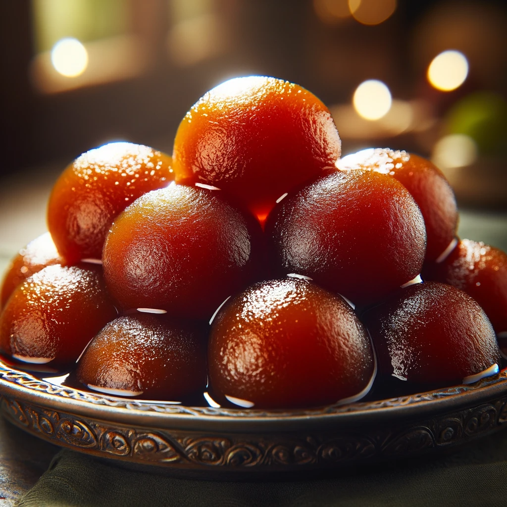
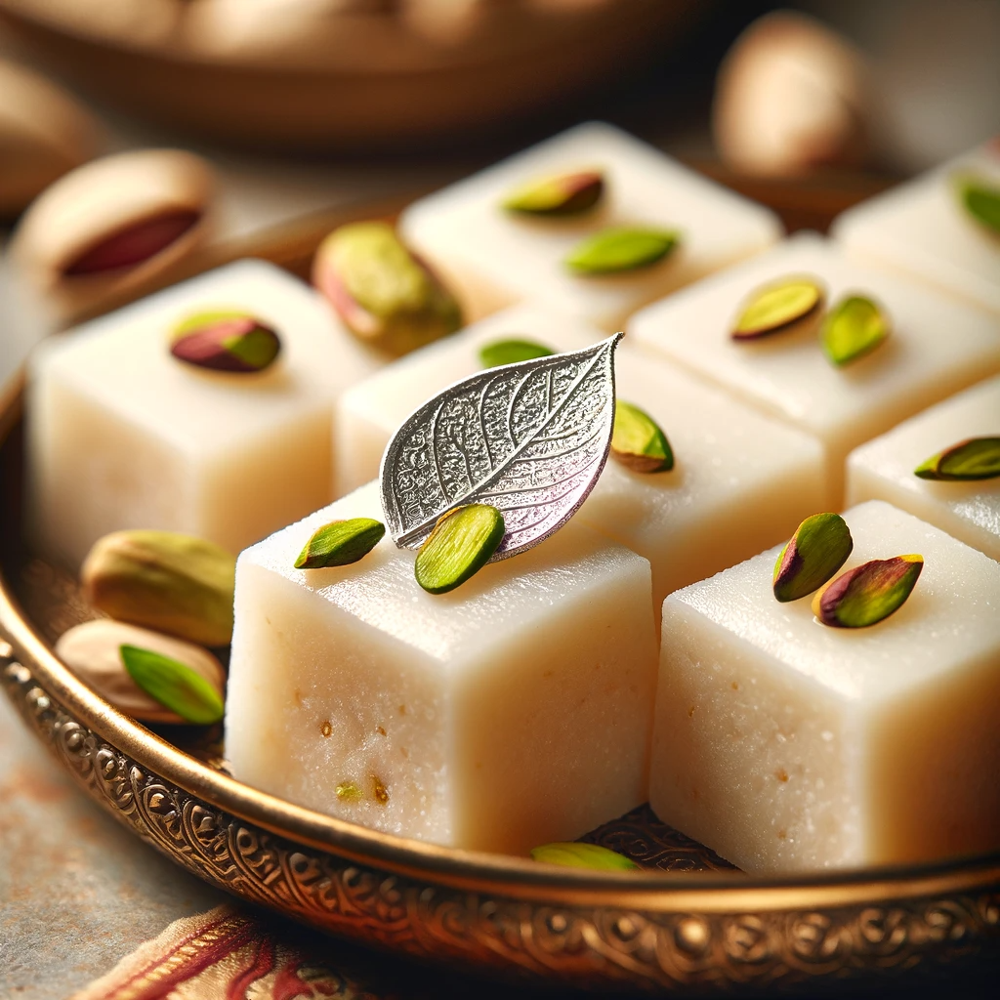

Gulab Jamun
Ingredients
- Sugar
- Bread
- Oil
Recipe
- Mix Gulab Jamun powder with water to form a smooth dough, then shape into small balls.
- Prepare sugar syrup by boiling sugar, water, and cardamom until slightly thickened.
- Deep fry the dough balls in ghee or oil until golden brown.
- Soak the fried balls in the warm sugar syrup for a few hours before serving.

Barfi
Ingredients
- Sugar
- Bread
- Oil
Recipe
- Combine condensed milk and milk powder in a pan, stirring continuously to form a thick paste.
- Cook the mixture on low heat until it thickens and leaves the sides of the pan.
- Pour the mixture into a greased tray, flatten it evenly, and let it cool.
- Pour the mixture into a greased tray, flatten it evenly, and let it cool.
